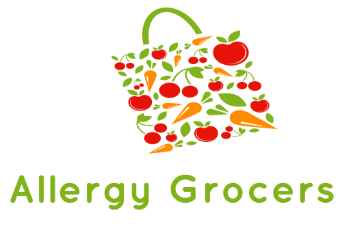
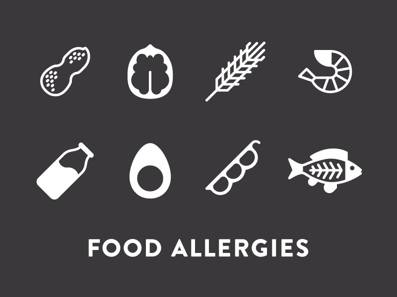

Allergy Grocers is a non-profit organization
dedicated to
help the whole world with food allergies
and
live with confidence.
We understand food allergies and we’re here to help you.
We deliver critical information which anyone impacted by food allergy needs to know, innovative educational programs to keep you and others informed about the latest developments, and life-changing support services to everyone with food allergies.
There is still much to do! We will not stop working on your behalf to improve the quality of life for the food allergy community. We continue our efforts to create change by:
- 
- Advocating for a minimum of two suppliers of epinephrine auto-injectors in the whole market
- Increasing allergy awareness on campus and in foodservice
- Advocating for change in the foodservice sector so you can eat out safely
- Educating the general public about the seriousness of food allergy
- Addressing food allergen labelling gaps, particularly with “may contain” statements
- Keeping you educated and informed about what’s happening in the world of food allergy
- Supporting youth so they can confidently manage their condition
"It's so scary when your child has an allergy
because it's literally
a life-or-death situation—you can't substitute something else."